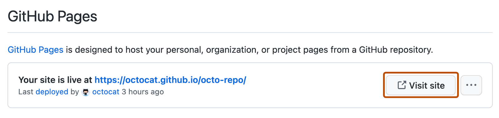

You can use Jekyll to create a GitHub Pages site in a new or existing repository.
Note
While the github-pages gem remains supported for some workflows, GitHub Actions is now the recommended approach for deploying and automating GitHub Pages sites.
Prerequisites
Before you can use Jekyll to create a GitHub Pages site, you must install Jekyll and Git. For more information, see Installation in the Jekyll documentation and Set up Git.
We recommend using Bundler to install and run Jekyll. Bundler manages Ruby gem dependencies, reduces Jekyll build errors, and prevents environment-related bugs. To install Bundler:
Install Ruby. For more information, see Installing Ruby in the Ruby documentation.
Install Bundler. For more information, see Bundler.
Tip
If you see a Ruby error when you try to install Jekyll using Bundler, you may need to use a package manager, such as RVM or Homebrew, to manage your Ruby installation. For more information, see Troubleshooting in the Jekyll documentation.
Creating a repository for your site
You can either create a repository or choose an existing repository for your site.
If you want to create a GitHub Pages site for a repository where not all of the files in the repository are related to the site, you will be able to configure a publishing source for your site. For example, you can have a dedicated branch and folder to hold your site source files, or you can use a custom GitHub Actions workflow to build and deploy your site source files.
If the account that owns the repository uses GitHub Free or GitHub Free for organizations, the repository must be public.
If you want to create a site in an existing repository, skip to the Creating your site section.
In the upper-right corner of any page, select , then click New repository.
Use the Owner dropdown menu to select the account you want to own the repository.
Type a name for your repository and an optional description. If you're creating a user or organization site, your repository must be named <user>.github.io or <organization>.github.io. If your user or organization name contains uppercase letters, you must lowercase the letters.
For more information, see What is GitHub Pages?.
Choose a repository visibility. For more information, see About repositories.
Creating your site
Before you can create your site, you must have a repository for your site on GitHub. If you're not creating your site in an existing repository, see Creating a repository for your site.
Warning
GitHub Pages sites are publicly available on the internet, even if the repository for the site is private (if your plan or organization allows it). If you have sensitive data in your site's repository, you may want to remove the data before publishing. For more information, see About repositories.
Open TerminalTerminalGit Bash.
If you don't already have a local copy of your repository, navigate to the location where you want to store your site's source files, replacing PARENT-FOLDER with the folder you want to contain the folder for your repository.
cd PARENT-FOLDER
If you haven't already, initialize a local Git repository, replacing REPOSITORY-NAME with the name of your repository.
git init REPOSITORY-NAME
> Initialized empty Git repository in /REPOSITORY-NAME/.git/
# Creates a new folder on your computer, initialized as a Git repository
Change directories to the repository.
cd REPOSITORY-NAME
# Changes the working directory
Navigate to the publishing source for your site. For more information, see Configuring a publishing source for your GitHub Pages site.
For example, if you chose to publish your site from the docs folder on the default branch, create and change directories to the docs folder.
mkdir docs
# Creates a new folder called docs
cd docs
If you chose to publish your site from the gh-pages branch, create and checkout the gh-pages branch.
git checkout --orphan gh-pages
# Creates a new branch, with no history or contents, called gh-pages, and switches to the gh-pages branch
git rm -rf .
# Removes the contents from your default branch from the working directory
To create a new Jekyll site, use the jekyll new command in your repository's root directory:
jekyll new --skip-bundle .
# Creates a Jekyll site in the current directory
Open the Gemfile that Jekyll created.
Add "#" to the beginning of the line that starts with gem "jekyll" to comment out this line.
Add the github-pages gem by editing the line starting with # gem "github-pages". Change this line to:
Replace GITHUB-PAGES-VERSION with the latest supported version of the github-pages gem. You can find this version here: Dependency versions.
The correct version Jekyll will be installed as a dependency of the github-pages gem.
Save and close the Gemfile.
From the command line, run bundle install.
Open the .gitignore file that Jekyll created and ignore the gems lock file by adding this line:
Gemfile.lock
Optionally, make any necessary edits to the _config.yml file. This is required for relative paths when the repository is hosted in a subdirectory. For more information, see Splitting a subfolder out into a new repository.
domain: my-site.github.io # if you want to force HTTPS, specify the domain without the http at the start, e.g. example.com
url: https://my-site.github.io # the base hostname and protocol for your site, e.g. http://example.com
baseurl: /REPOSITORY-NAME/ # place folder name if the site is served in a subfolder
git add .
git commit -m 'Initial GitHub pages site with Jekyll'
Add your repository on GitHub.com as a remote, replacing USER with the account that owns the repository and REPOSITORY with the name of the repository.
Under your repository name, click Settings. If you cannot see the "Settings" tab, select the dropdown menu, then click Settings.
In the "Code and automation" section of the sidebar, click Pages.
To see your published site, under "GitHub Pages", click Visit site.

Note
It can take up to 10 minutes for changes to your site to publish after you push the changes to GitHub. If you don't see your GitHub Pages site changes reflected in your browser after an hour, see About Jekyll build errors for GitHub Pages sites.
Your GitHub Pages site is built and deployed with a GitHub Actions workflow. For more information, see Viewing workflow run history.
Note
GitHub Actions is free for public repositories. Usage charges apply for private and internal repositories that go beyond the monthly allotment of free minutes. For more information, see Billing and usage.
Note
If you are publishing from a branch and your site has not published automatically, make sure someone with admin permissions and a verified email address has pushed to the publishing source.
Commits pushed by a GitHub Actions workflow that uses the GITHUB_TOKEN do not trigger a GitHub Pages build.